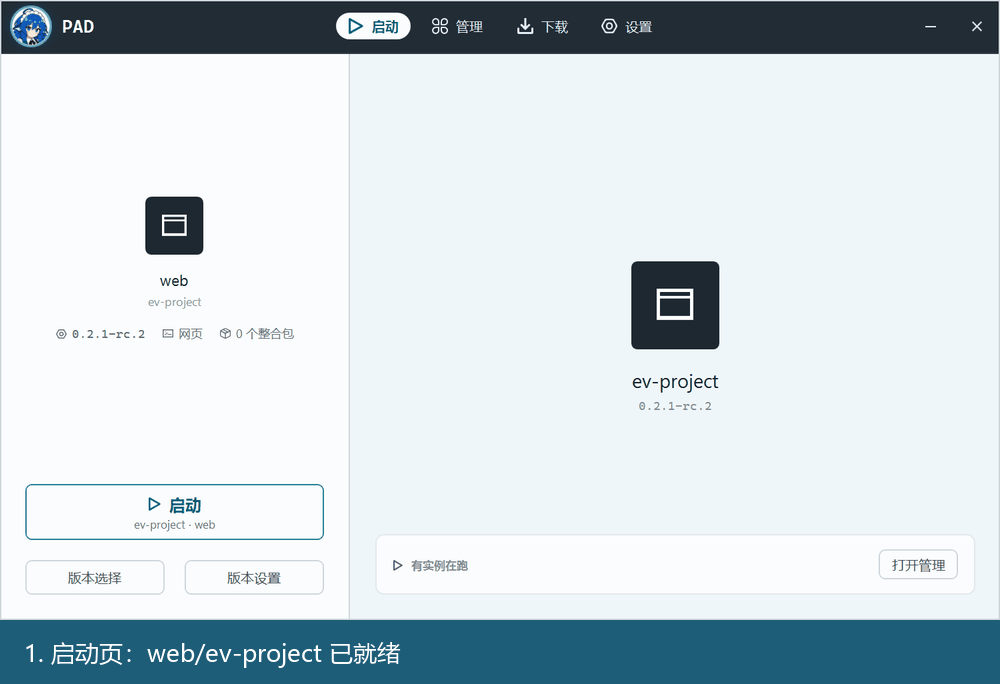
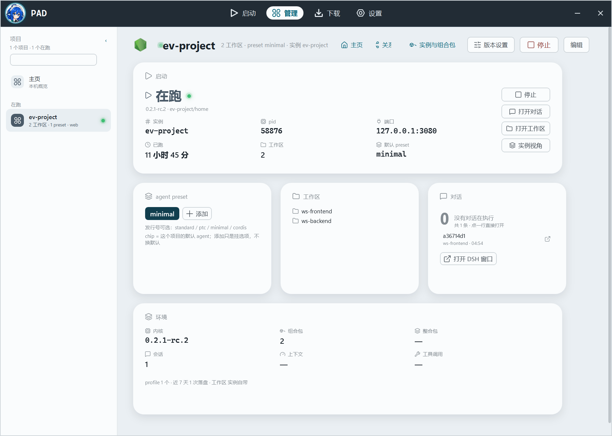
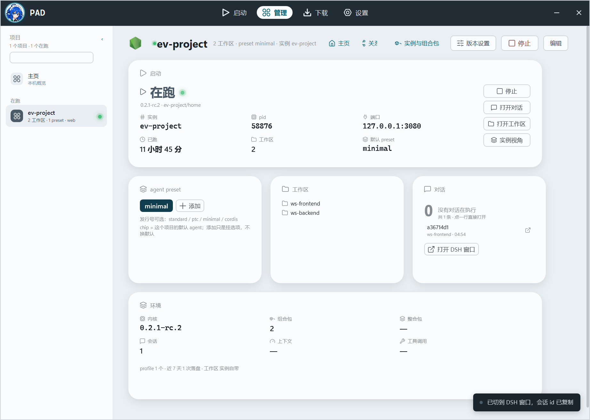
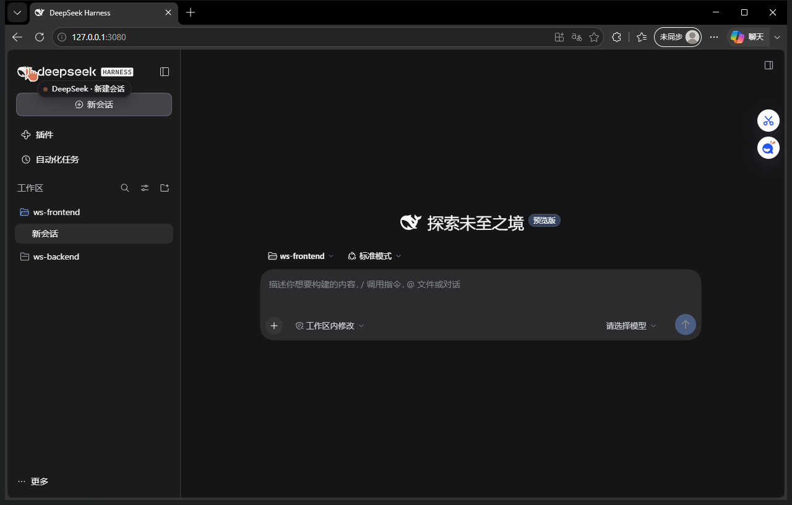
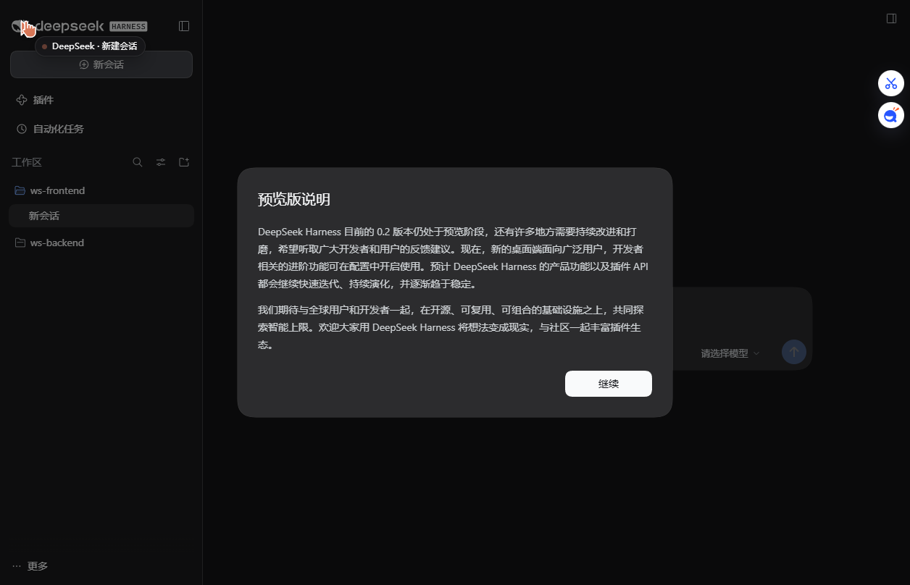
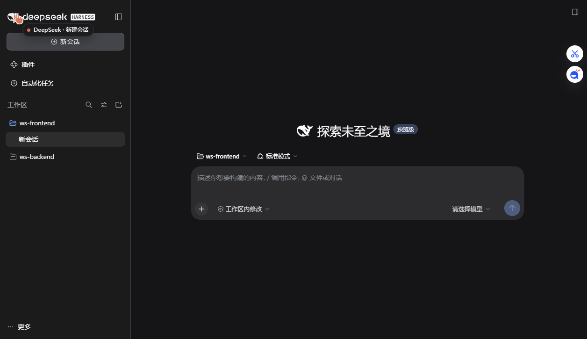
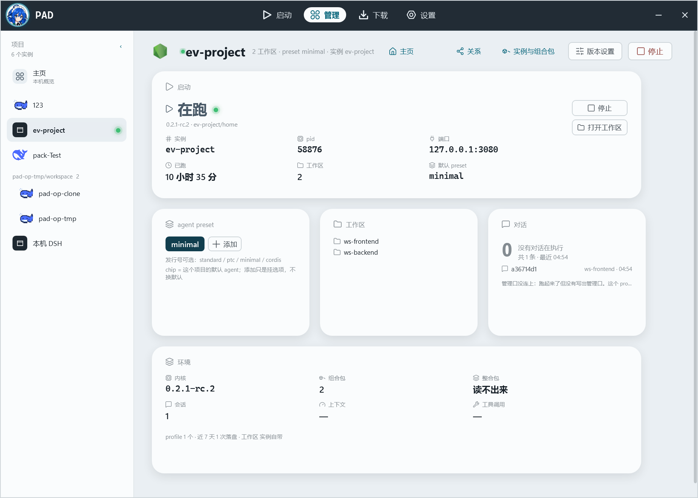
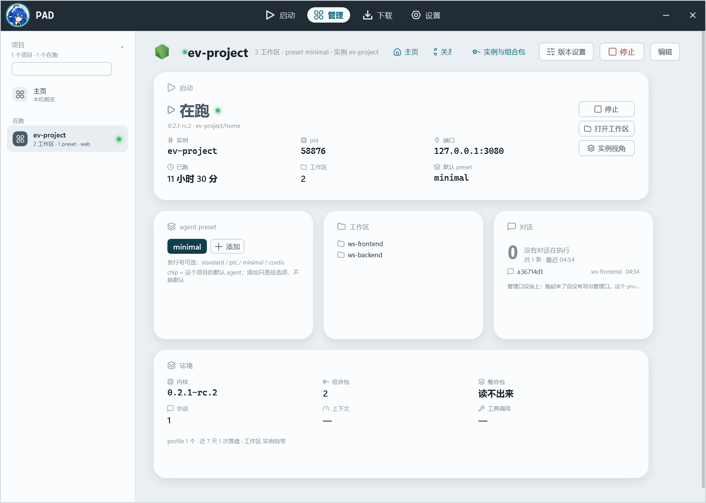
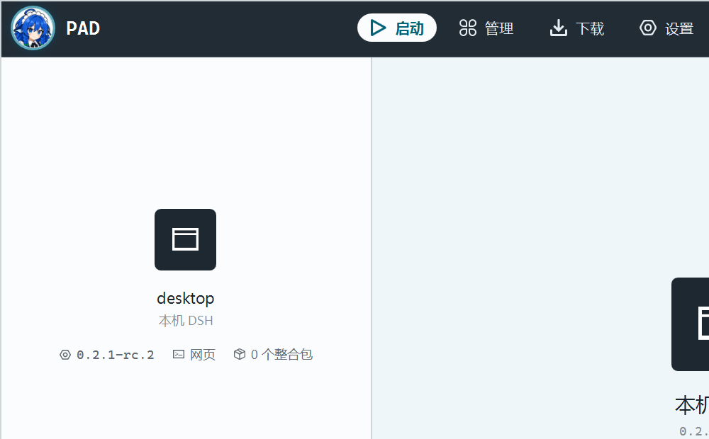

项目 = 绑定层（工作区 + agent preset），实例 = 运行体；侧栏按项目分组，点对话直接打开 DSH 窗口。 下面全部是真实窗口截图与录屏，不是原型。
启动页 → 管理主页 → 项目页 → 点「打开对话」→ DSH 真窗口 → 实例视角。可点右上角重播。

按 ← → 也能切换。每张都是 PrintWindow 抓的真实 PAD 窗口（1843×1314）。

项目页的对话卡每行都能点；右上「打开对话」按钮打开最近一条。动作有三步，必有反馈。
a36714d1 这一行。


项目窗口只显示项目工作区（D62）、preset 绑定（D63）、侧栏项目视角（D66）、重启后的真实 PAD。





下面这份是设计定版原型 v4（可交互，鼠标悬停/键盘都能玩）；本页是已实现的真实界面。 原型里的「现在流 / 任务 / 能力 / 自动收编页」还没有接进 PAD，属于下一批。
设计打开 prototype.html（原型 v4） · 实现本页截图 / demo.gif